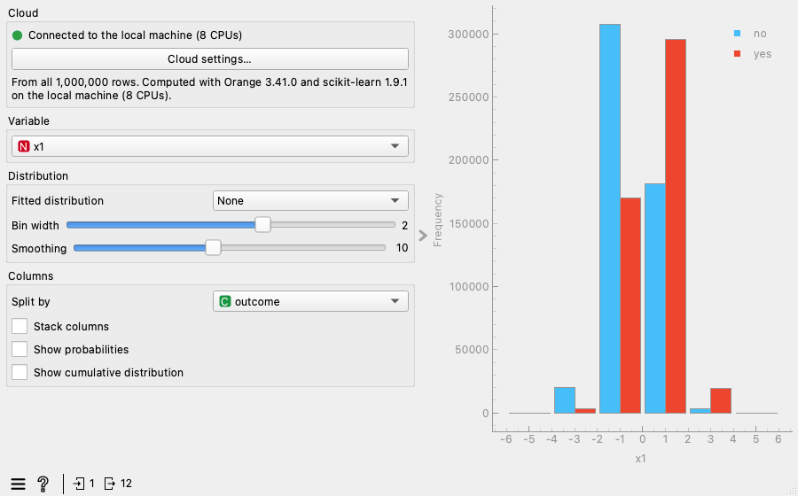

Cloud widgets
Cloud Distributions
The distribution of a column of a cloud table, computed on all rows on the machine.

Inputs
- Data: a cloud table, for example from Cloud File
Outputs
- Histogram Data: the bars' counts, as in Orange's Distributions
Like every Cloud widget, it has a Cloud box at the top: whether a machine is connected, Cloud settings…, and what the last job ran with, how long it took and what it cost. See Cloud widgets.
How to use it
- Variable: the column to show.
- Bin width: the same choices as Orange's Distributions, computed from all rows.
- Fitted distribution: normal, beta, gamma, Rayleigh, Pareto, exponential or kernel density, fitted on the machine. Smoothing applies to kernel density. Fitting a beta distribution to a million rows takes about 10 seconds.
- Split by a categorical column, with stacked columns, probabilities or the cumulative distribution.